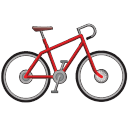

Dia Mundial de la Bicicleta
Banner conmemorativo
19 de abril Dia mundial de la bicicleta


19 de abril Dia mundial de la bicicleta
La primera bicicleta, fabricada con madera, se llamaba draisina porque la inventó Karl Drais en 1817. No tenía pedales: había que empujarla con los pies en el suelo. Para resolver el problema de la falta de equilibrio, en 1873, un inventor inglés llamado James Starley propuso una máquina con la rueda delantera mucho más grande que la trasera. En enero de 1887, el norteamericano Thomas Stevens comenzó el primer viaje en bicicleta alrededor del mundo.En 1885, aparece la Safety Bicycle inventada por John Kemp Starley. Tenía frenos, permitía una postura más natural y el ciclista estaba más cerca del suelo, por lo que las caídas no eran tan peligrosas. La bicicleta servía tanto para el campo como para la ciudad. Era un medio de transporte barato y accesible a cualquier persona. Además se puede arreglar con unos pocos conocimientos de mecánica. En la actualidad, existen unas 800 millones de bicicletas en el mundo y son utilizadas como medio de transporte principal o como vehículo de ocio.
La bicicleta sí es efectiva como medio de transporte para distancias no tan extensas, para usarla dentro de una ciudad o pueblo es de mucha utilidad.El uso de la bicicleta está extendido en casi todo el continente europeo. En países como Holanda, Suiza, Alemania, unas zonas de Polonia y en los países nórdicos; se ha convertido en uno de los primordiales medios de transporte. Pasando a Asia, fundamentalmente en China y La India, es la primera forma de transporte.Actualmente, en el mundo, existen cerca de 800 millones de bicicletas, siendo China el país poseedor de la mayor cantidad de estos vehículos.

1.-Bicicletas de Montaña (MTB):Las bicicletas de montaña, están equipadas con llantas anchas con dibujos marcados para mejorar el agarre en terrenos sueltos.
2.-Bicicletas de Ruta:Son bicicletas orientadas a obtener velocidad en pavimento, de construcción más ligera que otras bicicleta, están dotadas con ruedas más grandes, delgadas y provistas de llantas angostas y con dibujo liso.
3.-Bicicletas Híbridas:son bastante versátiles nacieron como una solución para quienes necesitan una bicicleta para la ciudad pero que tenga la flexibilidad de ser usada en diferentes terrenos.
4.-Bicicletas Urbanas:Estas bicicletas fueron concebidas para la ciudad, por lo que son de construcción bastante solida tanto en su cuadro como en sus ruedas.
5.-Bicicletas plegables:La gran mayoría de estas bicicletas usan ruedas pequeñas, siendo 16 y 20″ las más comunes En general vienen equipadas con 18- 20 cambios.
6.-Fixies y single speed:Su principal característica es su diseño simple y en muchos casos minimalista, sumamente eficientes y funcionales.
7.-Cruisers:Este tipo de bicicletas están diseñadas para trayectos cortos y sobre pavimento preferencialmente.
8.-MBX:Las BMX utilizan cuadros pequeños y resistentes, ideales para saltos y acrobacias.
9.-Touring:Estas bicicletas se usan para recorrer largas distancias y cargar peso.
10.-Eléctricas:son todas aquellas bicis que utilizan un motor para asistir el pedaleo.
11.-Bicicletas utilitarias:Al ser utilizadas para mover carga,una relación de velocidades adecuada para mover el peso extra.
12.-Fat Bikes:on de reciente aparición y su uso principal es sobre terrenos con nieve o arena, grandes piedras, raíces, etc.
– Specialized
.jpg)
– Scott
– Giant
– Cannondale

– Merida
Una persona se despierta todavía en la oscuridad de su habitación. Es lunes por la mañana y hoy empieza su semana laboral. Una ducha rápida para terminar de desperezarse, un desayuno fugaz. Llaves, cartera, móvil. Ya está lista para enfrentarse al día. Sale de casa y al llegar al portal se acerca a una bicicleta, encadenada todavía, para liberarla y abrirse paso a través de las calles de la ciudad.De qué ciudad? De cualquiera. La silueta de nuestro protagonista, hombre o mujer, puede recortar la Torre Eiffel en París, la Casa Rosada en Buenos Aires, el Templo del Cielo en Pekín o la Catedral de Amberes. Puede que vaya abrigado para combatir el viento que sopla en su cara o puede que vaya con ropa de verano y a un ritmo apaciguado porque el sol ya empieza a calentar. De cualquier manera, esta persona forma parte de una comunidad de mil millones de miembros que, con este sencillo ritual, están contribuyendo a salvar el Planeta de un modo que tal vez ni ellos se imaginan.


 1
1 2
2 3
3 4
4 5
5 6
6 7
7 8
8 9
9 10
10 11
11 12
12